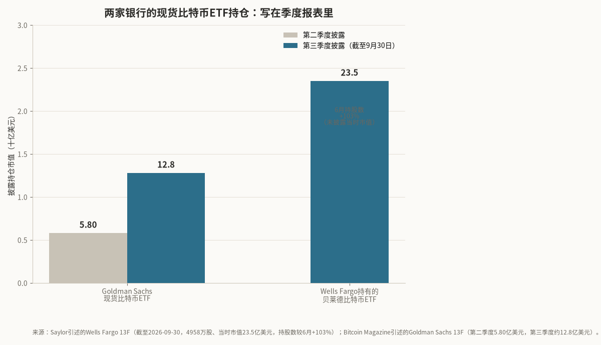
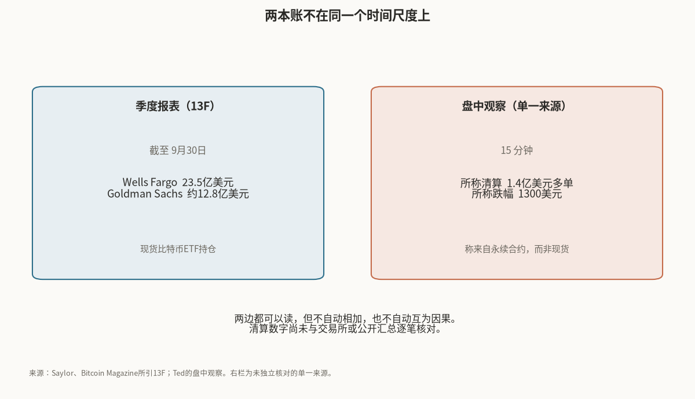

银行报表里在加仓，盘面上却有人被清算：比特币这两本账为什么对不上
Wells Fargo披露持有贝莱德比特币ETF 4958万股、价值23.5亿美元，Goldman Sachs披露现货比特币ETF持仓约12.8亿美元；另一边，有交易员称比特币15分钟跌了1300美元、清算1.4亿美元多单，并说卖压来自永续合约而非现货。
一边是银行交给监管的季度报表。Saylor把它转了出来：Wells Fargo在9月30日持有贝莱德比特币ETF 4958万股，比6月多了103%，当时值23.5亿美元。
另一边是交易软件上的一根急跌。Ted写道：只要15分钟，比特币跌了1300美元，1.4亿美元的多单被清掉；而且这不是现货在卖，是永续合约在做空。
两本账都在同一天被人转来转去，也很容易被说成同一件事：机构在买，盘面却在砸。时间对得上吗？口径对得上吗？
银行增持写在截至9月30日的持仓里，15分钟清算写在单一交易员的盘中观察里。两边都可以读，但不能直接加成因果关系。
先把几个词说清楚
现货比特币ETF，是在美股账户里就能买到的比特币基金。基金多了申购，就要去买或持有更多比特币；赎回多过申购，就会变成净流出。
13F，是美国大型投资机构每个季度向监管提交的持仓报告。它记录的是某个截止日——这次是9月30日——账上有什么，不是今天谁在买、谁在卖。一份13F还可能包含代客持仓、做市库存和对冲，不一定等于这家机构自己看多。
永续合约，是一种没有到期日的合约，常被用来加杠杆做多或做空。价格发现有时会先发生在合约上，再传到现货。
清算，也叫强平。价格往不利的方向走，亏损快把保证金吃光时，交易所会把仓位强制平掉。一张多单被清算，市场上就多出一笔卖单。
多单押涨，空单押跌。Ted把这次急跌写成：先有永续合约做空，再把多单挤下去。
报表上的增持，停在9月30日
先把能核对的数字放在一张表里。
| 披露来源 | 截止日 | 写了什么 | 和上一期怎么比 |
|---|---|---|---|
| Wells Fargo（经Saylor转述） | 9月30日 | 持有贝莱德比特币ETF 4958万股，当时市值23.5亿美元 | 持股数较6月30日增加103% |
| Goldman Sachs（经Bitcoin Magazine转述） | 第三季度13F | 现货比特币ETF持仓约12.8亿美元 | 较第二季度的5.80亿美元增加约121% |

Saylor的原话是：银行正在把比特币带给它们的客户。这句话指向的是渠道，不是某一分钟的价格。Bitcoin Magazine把Goldman Sachs的增幅写成约121%，并配上了火箭符号；数字本身可以对上5.80亿到12.8亿。
这些持仓有两层需要单独记住。第一，它们停在9月30日，之后比特币又经历了一轮下跌，报表不会自动更新到今天。Saylor转述里那句“were worth”，用的就是过去时。第二，13F常见的疑问是：这是自己的方向性仓位，还是代客、做市或套保？散户讨论里已经有人提出，一家银行的ETF账面，未必等于它在押涨。这个问题问得对，但现有公开帖里，没有给出足以把这两家持仓全部归类的明细。
同一窗口里，Bitcoin Magazine还写：俄罗斯零售投资者从当天起可以合法买比特币。原帖没有展开额度、测试和托管细则，只能当作一条单独的政策消息，不能拿来解释15分钟的急跌。
算一笔账：15分钟和1.4亿美元
下面只使用Ted写下的数字。⚠️ 15分钟跌1300美元、清算1.4亿美元多单、以及「卖压来自永续合约、并非现货」，目前都是单一来源，没有在正文里用第二份公开汇总逐笔核对。
第一步，先记下口径。他写的是多单被清算，金额是1.4亿美元，时间窗口是15分钟，价格变动是下跌1300美元。原帖没有写出这15分钟的起点和终点价，所以无法从1300美元反推当时的精确价格，也不宜把别的帖子里的价格，悄悄填进这根K线。
第二步，1.4亿美元是什么。它指的是被强制平掉的多头仓位规模，不是现货市场上恰好有人卖掉了1.4亿美元的比特币，更不是两家银行在当天减持了这么多ETF。一张被强平的多单，会变成市场上的一笔卖单，但它发生在合约账户里。
第三步，把两本账的时间对准。Wells Fargo和Goldman Sachs的数字，累计的是一个季度，截止日是9月30日。Ted观察的是盘中的一刻钟。用12.8亿美元去除1.4亿美元，可以得到大约11%，这个比例没有投资含义：一个是季度末的存量，一个是15分钟里的流量，分子分母不是同一类东西。
第四步，同一天Ted还有别的判断。更早些时候，他写过价格在走平、现货买盘在加快，看起来像吸筹；也写过多单清算密集区在6.1万到6.2万美元，空单在6.5万到7.5万美元，认为最大痛点在上方。这些是同一人的不同观察，不能拿来自动证实或推翻那笔1.4亿美元。
第五步，能下的结论其实很窄。如果他的观察成立，这根急跌首先发生在杠杆合约上，现货不一定先动。如果观察不成立，那就只是一条还没有被核对的盘中描述。无论哪种，它都解释不了9月30日那两份银行持仓为什么增加。

不要把两本账加在一起
不要把这两本账加在一起。把「银行在加仓」和「有人被清算」写成因果关系，最常见的写法是：机构都在买，所以这根急跌只是洗盘；或者反过来，清算来了，说明那些增持是假的。
两句话都缺少一块中间证据。13F不能告诉你11月17日谁在下单；1.4亿美元的清算描述，也不能告诉你第三季度那些ETF份额后来有没有被对冲掉。渠道在扩大，是披露文件里已经写明的事实。当天这笔急跌有多大、是不是永续合约导致的，还需要第二份来源。
Peter Schiff把话说得更远。他认为几乎所有资产都是泡沫，AI会是下一场更大金融危机里的次级债，美联储收回宽松之后，泡沫会一起消下去。这是他一贯的判断，不是对那1.4亿美元的核对，也不否定13F里的持股数字。
两本账对不上，不一定谁在撒谎
银行把现货比特币ETF写进给客户看的渠道里，这件事情发生在季度报表上，时间停留在9月30日。15分钟里有没有出现大额多单清算，目前只有一条未经核对的盘中描述。
真正会改写判断的，是两类可以对照的后续信号：现货比特币ETF在下一个能统计的交易日，是继续流入还是流出；以及那笔15分钟清算，有没有出现可核对的交易所或公开汇总数字。在那之前，两本账适合并排放，不适合焊成一条故事。
这对做比特币交易的人意味着什么
先分清自己看的是季度持仓，还是15分钟的杠杆清算，不要用其中一本账去解释另一本。
如果持有的是现货或ETF，9月30日那两份银行披露说明的是渠道还在变宽，不是今天的接盘厚度。如果做的是永续合约，更需要记住的是：在一条尚未核对的描述里，多单可以在一刻钟内被清掉1.4亿美元。单子的方向对不对，仍然要等能够核对的资金流和清算数据出来，再决定要不要改看法。
几点说明
Wells Fargo的23.5亿美元是9月30日当时的市值，持股数较6月增加103%，文中没有把6月的市值倒推出来，因为价格已经变了。Goldman Sachs从5.80亿美元到约12.8亿美元的增幅，按12.8÷5.80−1计算，约121%，与转述一致。1.4亿美元、1300美元和「永续合约做空」全部来自Ted同一条帖子，未与其他公开汇总核对。文中出现的约11%只用来说明存量和流量不能直接相除，没有投资含义。俄罗斯零售投资者可合法买比特币，原帖未提供额度细则。
免责声明：本文仅供信息参考，不构成任何投资建议。
X 上怎么看
结论 · 银行增持写在截至9月30日的季度报表里，15分钟清算写在单一交易员的盘中观察里，两本账时间不同、口径不同，不能加成因果关系。机构持仓在增加，是披露文件里的事实；当天这笔急跌有多大、是不是永续合约导致的，还缺少第二份核对。
▲ 看多6 位
观点为 X 用户当日公开帖子的中文摘要，忠于原文但有删减；标「未核实」的为预测、个人推测或单一来源说法。立场为人工判断。
数据来源
- Wells Fargo持有贝莱德比特币ETF 4958万股、9月30日市值23.5亿美元、持股数较6月增加103%，来自Saylor对13F的转述。
- Goldman Sachs现货比特币ETF从第二季度5.80亿美元增至约12.8亿美元、增幅约121%，来自Bitcoin Magazine对13F的转述。两份披露都截止于第三季度，不是当天买盘。13F也可能包含代客、做市或套保，文中已说明这一点，没有把持仓全部写成方向性多单。
- 15分钟跌1300美元、清算1.4亿美元多单、以及「不是现货而是永续合约做空」，全部来自Ted同一条帖子，未与交易所或公开汇总逐笔核对。
- Ted关于吸筹、以及6.1万–6.2万美元多单清算区和上方空单清算区的判断，来自他当天另外两条帖子，不与1.4亿美元自动互证。
- 俄罗斯零售投资者可合法买比特币，来自Bitcoin Magazine，原帖未展开额度细则。
- https://x.com/saylor/status/2122685864421843248
- https://x.com/BitcoinMagazine/status/2122671091571200001
- https://x.com/TedPillows/status/2122731444128842010
- https://x.com/TedPillows/status/2122615309001535677
- https://x.com/TedPillows/status/2122640892691443790
- https://x.com/saylor/status/2122761335834624196
- https://x.com/BitcoinMagazine/status/2122653530339365310
- https://x.com/PeterSchiff/status/2122773002266058762